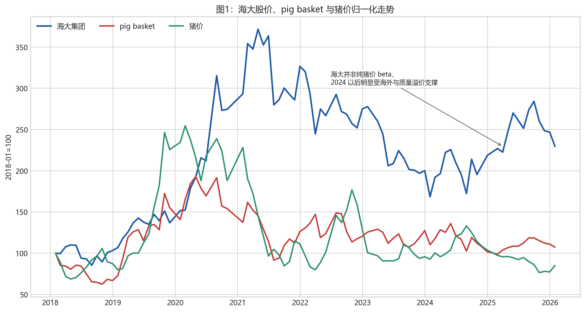
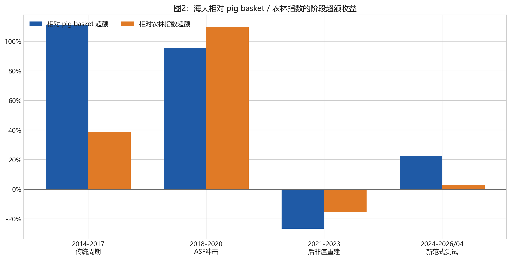
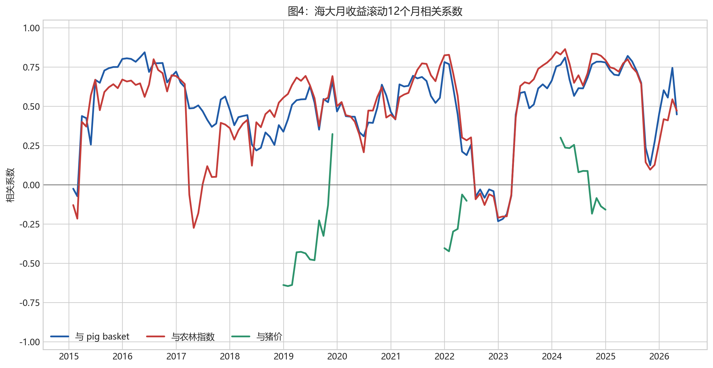
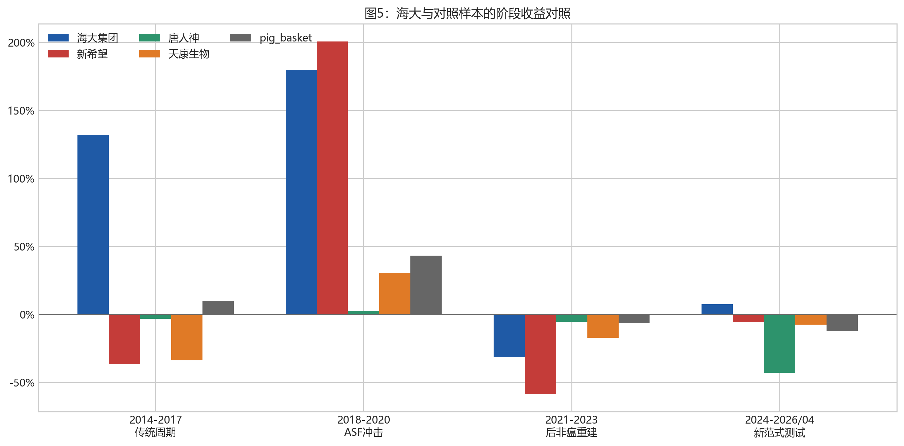
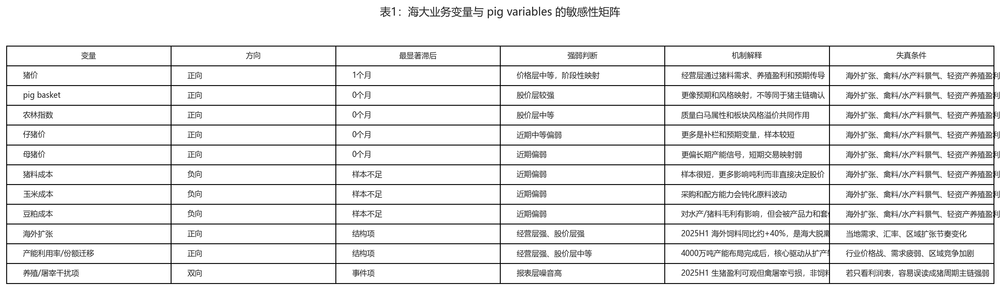

经营层
中等敏感，但明显不是单变量敏感。2021A-2024A 猪料占外销量大致稳定在 23%-26%，并未走成全局唯一驱动。
这份专题把海大集团放在猪周期主链旁边，而不是塞回主链内部。核心问题不是 “海大会不会跟猪价走”，而是它的饲料业务、海外扩张、份额迁移与市场质量溢价， 会在多大程度上放大或钝化猪周期的影响。
海大的价值不在于替代猪行业判断，而在于把 “feed alpha、quality premium 与 pig beta” 放进同一家公司的经营和股价里。
中等敏感，但明显不是单变量敏感。2021A-2024A 猪料占外销量大致稳定在 23%-26%，并未走成全局唯一驱动。
对 pig basket 和农林指数的映射，显著强于对猪价现货的直接映射；市场交易的更像板块和质量预期。
海大是 pig interface / adjacent-chain beneficiary，不是纯猪价 beta 资产，更不能单独改写 pig 主链状态。
2024A 公司饲料外销量约 2442 万吨，同比增长 9%；其中禽料外销量 1265 万吨、 水产料 585 万吨、猪料 564 万吨，海外饲料销量 236 万吨、同比约 +40%。也就是说， 在增长最显著的这一阶段，海大的增长并不是由“猪料单核驱动”，而更像 `全品类扩张 + 海外抬升 + 份额迁移`。
海大的主线更接近 `水产料起家 -> 禽料放大 -> 猪料补强 -> 海外复制国内竞争范式`， 而不是先靠猪周期再靠猪价弹性放大。
| 指标（万吨） | 2021A | 2022A | 2023A | 2024A |
|---|---|---|---|---|
| 饲料外销量 | 1,877 | 2,024 | 2,260 | 2,442 |
| 禽料外销量 | 944 | 1,002 | 1,130 | 1,265 |
| 猪料外销量 | 460 | 494 | 579 | 564 |
| 水产料外销量 | 467 | 512 | 524 | 585 |
| 海外饲料销量 | n/a | n/a | 171 | 236 |
猪料占外销量结构在 2021A-2024A 约为 24.5%、24.4%、25.6%、23.1%，并没有持续抬升。 禽料和水产料合计长期占到 74%-77%，意味着海大的 readout 必须用多变量解释。
公司公告口径显示，2025H1 饲料外销量约 1,365 万吨，同比增加 284 万吨、增速约 26%， 其中海外同比约 +40%。同口径里公司也提示生猪盈利可观、禽屠宰业务亏损，利润表混合噪音依旧存在。
海大与 pig basket、农林指数的相关性，长期显著高于与猪价现货的相关性。它会参与猪链交易， 但多数时候不是高弹性纯 beta。

2024 以后海大的相对韧性更像海外扩张和质量溢价支撑，而不是猪价现实层已经确认反转。

海大在 2018-2020 与 2024-2026/04 都明显跑赢 pig basket，但驱动机制并不相同。

近阶段海大与 pig basket / 农林指数的相关性明显抬升，说明市场在用板块和风格视角给它定价。

海大的回撤和修复路径都弱于高弹性纯猪股，更接近高质量农牧公司的交易画像。
全样本月频回归里，海大对农林指数和 pig basket 的 0 滞后系数约为 0.70 与 0.55， t 值约 7.81 与 7.32；对猪价变动最优结果只有约 1 个月滞后、t 值约 1.12。

对海大最稳定的股价映射变量是 pig basket 与农林指数；海外扩张、产能利用率和份额迁移， 是它区别于纯猪股的核心 alpha 来源。
海大的价值在于桥接，不在于越权。公开站保留这条边界，是为了让公司层始终从属于行业层。
帮助理解 feed alpha、quality premium 与 pig beta 如何在一家公司里交织。
帮助分清哪些 readout 是份额迁移，哪些才更接近行业总量变化。
不能把海大饲料量利改善直接翻译成 pig 主链反转。
不能把海大股价跑赢直接翻译成猪价现实层已确认修复。
PDF、图表和 task-local 研究底稿已经同步生成。网页版只承接表达层，不承接内部工作流本身。
PDF: ./haida-feed-vs-pig-cycle-bridge-sellside.pdf